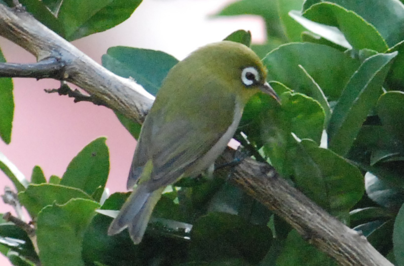

Zosterops xanthochroa
New Caledonian White-eyes are small white-eyes frequenting their range and eat necter, insects and fruit. New Caledonian White-eyes are usually found in flocks. They have an olive green crown and nape and a darker green back with a thick white eye-ring and grey-black legs. They have a grey-green colour on their primary feathers, wing coverts and tail feathers.